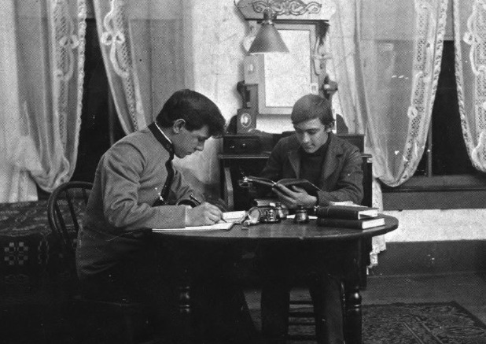

Since 1904
The Fraternity
Sigma Nu Fraternity was founded in 1869 at the Virginia Military Institute by three cadets who stood against the culture of hazing they saw around them. From that stand came the Legion of Honor and a fraternity built on a simple, powerful idea: brotherhood without hazing, guided by honor.
Today Sigma Nu is one of the largest and most respected fraternities in North America, still governed by its founding values of Love, Honor, and Truth.
The Chapter
The Gamma Upsilon Chapter was established at the University of Arkansas on December 21, 1904. Over the century that followed, it grew into the largest chapter in Sigma Nu — home to more than 3,700 initiated brothers, more than any other chapter in the fraternity's history.
Gamma Upsilon's brothers have carried the chapter's name far beyond Fayetteville. Its alumni are counted among Arkansas's most accomplished leaders — from world-renowned architect Edward Durell Stone and Tyson Foods leader Don Tyson to Razorback All-American Chuck Dicus, Arkansas Supreme Court Chief Justice John Dan Kemp, and University of Arkansas Chancellor John A. White — a testament to the men this brotherhood has helped shape.
After nearly a century on the Hill, the chapter stepped away in 2000 before being proudly re-established by a new generation of Arkansas men determined to rebuild Gamma Upsilon on its founding values. Today the chapter carries that legacy forward — honoring the brothers who came before while writing its next chapter.

What We Stand For
Brotherhood that lasts a lifetime.
Doing the right thing, especially when no one is watching.
Integrity in word and action.
These three words have guided every Sigma Nu since 1869 — and remain the standard we hold each brother to today.